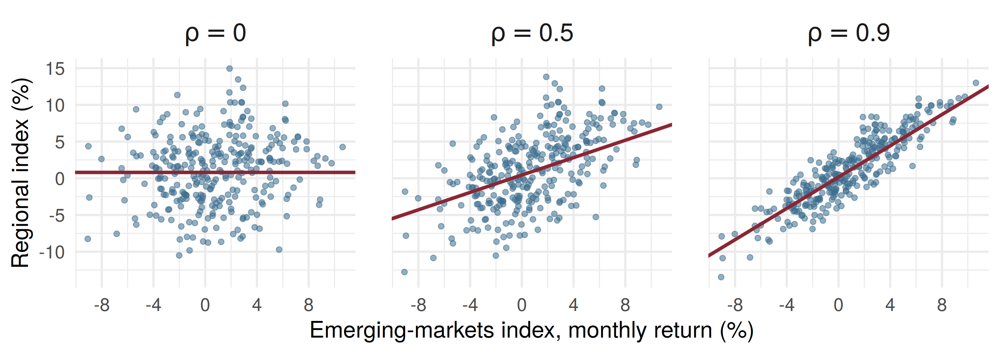

mean var within between
1.2533000 1.5640748 1.0435605 0.5231404 Mathematical Statistics
The Bivariate Normal Distribution and Conditional Expectations
Samir Orujov, PhD
ADA University, School of Business
Information Communication Technologies Agency, Statistics Unit
2026-09-24
🎯 Learning Objectives
By the end of this lecture, you will be able to:
Describe the bivariate normal by its five parameters, and say what \(\rho\) does to its shape
Compute a conditional expectation \(E(Y_1 \mid Y_2 = y_2)\) from a conditional density (Definition 5.13)
Apply Theorem 5.14, \(E(Y_1) = E[E(Y_1 \mid Y_2)]\), to a hierarchical model
Split a variance with Theorem 5.15 into a within part and a between part
Read each piece of that split in economic terms
🗺️ Where We Are
Wackerly §§5.10–5.11
Friday: the multinomial, the joint distribution of the counts in several categories at once.
Today closes Chapter 5 with two ideas. §5.10 is the book’s optional section: we meet the bivariate normal descriptively, as the picture behind “two correlated returns”.
§5.11 is the load-bearing one. Once we know the distribution of \(Y_1\) given \(Y_2\), its mean and variance are ordinary means and variances, and Theorems 5.14–5.15 put them back together.
❓ Motivating Question
The question this lecture answers
A household in Baku earns 1,500 AZN this month. How much do we expect it to spend, and what does averaging that forecast over all incomes tell us about average spending?
The first answer is a number that depends on the income: a regression function. The second is Theorem 5.14.
📐 §5.10: The Bivariate Normal Density
\[f(y_1, y_2) = \frac{e^{-Q/2}}{2\pi\sigma_1\sigma_2\sqrt{1-\rho^2}}, \qquad -\infty < y_1, y_2 < \infty,\]
\[Q = \frac{1}{1-\rho^2}\left[\frac{(y_1-\mu_1)^2}{\sigma_1^2} - 2\rho\frac{(y_1-\mu_1)(y_2-\mu_2)}{\sigma_1\sigma_2} + \frac{(y_2-\mu_2)^2}{\sigma_2^2}\right]\]
Five parameters: \(\mu_1, \mu_2, \sigma_1^2, \sigma_2^2, \rho\). Nobody integrates this in class; we read off what it implies.
🔑 What the Five Parameters Mean
Marginals are normal: \(Y_1 \sim N(\mu_1, \sigma_1^2)\) and \(Y_2 \sim N(\mu_2, \sigma_2^2)\) (Exercise 5.128)
Covariance: \(\text{Cov}(Y_1, Y_2) = \rho\sigma_1\sigma_2\), so \(\rho\) is the correlation
Independence: \(\rho = 0\) makes \(f\) factor, so \(Y_1, Y_2\) are independent if and only if \(\text{Cov} = 0\)
Conditional (Exercise 5.129): given \(Y_2 = y_2\), \(Y_1\) is normal with \[\text{mean } \mu_1 + \rho\frac{\sigma_1}{\sigma_2}(y_2 - \mu_2), \qquad \text{variance } \sigma_1^2(1-\rho^2)\]
Zero covariance does not imply independence in general (recall the Brent straddle from §5.7). The bivariate normal is the exception.
📈 Two Correlated Indices

Same marginals in all three panels. The red line is \(E(Y_1 \mid Y_2 = y_2)\); as \(\rho\) rises the cloud tilts onto it and the spread about it shrinks from 4.5% to 1.96%.
📐 Definition 5.13
Definition 5.13
If \(Y_1\) and \(Y_2\) are any two random variables, the conditional expectation of \(g(Y_1)\), given that \(Y_2 = y_2\), is \[E(g(Y_1) \mid Y_2 = y_2) = \int_{-\infty}^{\infty} g(y_1) f(y_1 \mid y_2)\, dy_1\] if jointly continuous, and \(\sum_{\text{all } y_1} g(y_1)\,p(y_1 \mid y_2)\) if jointly discrete.
An ordinary expectation, computed with the conditional density in place of the marginal.
🛒 Consumption Given Income
\(Y_2\) = a household’s monthly income and \(Y_1\) = its consumption, both in thousand AZN, with spending never above income: \[f(y_1, y_2) = 1/2, \qquad 0 \le y_1 \le y_2 \le 2\]
Step 1. \(f_2(y_2) = \int_0^{y_2} \tfrac12\, dy_1 = y_2/2\), so \(f(y_1 \mid y_2) = \dfrac{1/2}{y_2/2} = \dfrac{1}{y_2}\) on \(0 < y_1 \le y_2\).
Step 2. \(E(Y_1 \mid Y_2 = y_2) = \int_0^{y_2} y_1 \dfrac{1}{y_2}\, dy_1 = \dfrac{y_2}{2}\).
Step 3. At \(y_2 = 1.5\): expected spending is \(0.75\), i.e. 750 AZN. The slope \(1/2\) is a marginal propensity to consume.
🔁 A Random Variable of Its Own
\(E(Y_1 \mid Y_2 = y_2) = y_2/2\) is a number for each income level.
Let the income vary and it becomes \(E(Y_1 \mid Y_2) = Y_2/2\): a function of the random variable \(Y_2\), so itself a random variable, with a mean and a variance of its own.
Its mean is Theorem 5.14. Its variance is half of Theorem 5.15.
📐 Theorem 5.14: Average the Averages
Theorem 5.14
\[E(Y_1) = E[E(Y_1 \mid Y_2)]\] the inner expectation over the conditional distribution of \(Y_1\) given \(Y_2\), the outer over the distribution of \(Y_2\).
Consumption check: \(E(Y_2) = \int_0^2 y_2 \cdot \tfrac{y_2}{2}\, dy_2 = \tfrac43\), so \[E(Y_1) = E(Y_2/2) = \tfrac23 \approx 667 \text{ AZN}\] Directly, \(f_1(y_1) = (2 - y_1)/2\) gives \(\int_0^2 y_1 \tfrac{2-y_1}{2}\, dy_1 = \tfrac23\) as well.
🚚 Claims per Fleet Policy
An insurer writes fleet policies on 10 delivery vans each. Within a fleet, each van has a claim in the year independently with probability \(p\), so \(Y \mid p \sim \text{Bin}(10, p)\).
But fleets differ: \(p\) is uniform on \((0, 1/4)\) across the book (Example 5.32).
\[E(Y) = E[E(Y \mid p)] = E(10p) = 10 \cdot \frac{0 + 1/4}{2} = \frac{10}{8} = 1.25\]
1.25 claims per policy per year, found without the marginal distribution of \(Y\).
📐 Theorem 5.15: Splitting a Variance
The conditional variance: \(V(Y_1 \mid Y_2 = y_2) = E(Y_1^2 \mid Y_2 = y_2) - [E(Y_1 \mid Y_2 = y_2)]^2\).
Theorem 5.15
\[V(Y_1) = E[V(Y_1 \mid Y_2)] + V[E(Y_1 \mid Y_2)]\]
- \(E[V(Y_1 \mid Y_2)]\): the within part, average spread around each conditional mean
- \(V[E(Y_1 \mid Y_2)]\): the between part, how much the conditional means themselves move
🚚 The Variance of Claims
\(E(Y \mid p) = 10p\) and \(V(Y \mid p) = 10p(1-p)\). With \(E(p) = \tfrac18\), \(V(p) = \tfrac{(1/4)^2}{12} = \tfrac{1}{192}\), \(E(p^2) = \tfrac{1}{192} + \tfrac{1}{64} = \tfrac{1}{48}\):
\[E[V(Y \mid p)] = 10\left(\tfrac18 - \tfrac{1}{48}\right) = 1.0417, \qquad V[E(Y \mid p)] = 100 \cdot \tfrac{1}{192} = 0.5208\] \[V(Y) = 1.5625, \qquad \sigma = 1.25\]
A binomial with \(p\) fixed at \(1/8\) would give only \(10 \cdot \tfrac18 \cdot \tfrac78 = 1.09\). Not knowing the fleet adds risk, and the between part is where it shows.
💻 The Fleet Book, Simulated
Theory: 1.25, 1.5625, 1.0417, 0.5208. The simulation agrees to two decimals; within + between recovers the total.
🏛️ Risk Across Market Regimes
A pension fund’s monthly return \(R\) (%) depends on the regime \(M\):
| Regime | \(P(M)\) | \(E(R \mid M)\) | \(\text{SD}(R \mid M)\) |
|---|---|---|---|
| calm | 0.8 | 1.2 | 3 |
| oil-price stress | 0.2 | \(-2.5\) | 7 |
\(E(R) = 0.8(1.2) + 0.2(-2.5) = 0.46\%\) by Theorem 5.14.
Within: \(E[V(R \mid M)] = 0.8(9) + 0.2(49) = 17.00\)
🏛️ The Split, Read as Risk
Between: \(V[E(R \mid M)] = 0.8(1.2)^2 + 0.2(2.5)^2 - 0.46^2 = 2.40 - 0.21 = 2.19\)
\[V(R) = 17.00 + 2.19 = 19.19, \qquad \text{SD}(R) = 4.38\%\]
- 89% of the variance is ordinary month-to-month noise inside a regime
- 11% comes from not knowing which regime we are in
Quoting only the calm-regime 3% understates the fund’s risk by almost a third.
🧠 Think-Pair-Share
Monthly household income \(Y_2\) and consumption \(Y_1\) (AZN) are bivariate normal: \(\mu_2 = 1400\), \(\sigma_2 = 400\), \(\mu_1 = 1100\), \(\sigma_1 = 250\), \(\rho = 0.8\).
Four minutes, in pairs:
Expected consumption of a household earning 1,800 AZN? Earning 1,000?
The standard deviation of consumption given income?
Check Theorem 5.15: do within and between add up to \(\sigma_1^2\)?
✅ Think-Pair-Share: Solution
- Slope \(\rho\,\sigma_1/\sigma_2 = 0.8 \times 250/400 = 0.5\), so \[E(Y_1 \mid Y_2 = 1800) = 1100 + 0.5(400) = 1300, \qquad E(Y_1 \mid Y_2 = 1000) = 900\]
- \(V(Y_1 \mid Y_2) = 250^2(1 - 0.64) = 22{,}500\), so the conditional SD is 150 AZN, the same at every income.
- Within \(= 22{,}500\). Between \(= V(0.5\,Y_2) = 0.25 \times 400^2 = 40{,}000\). Sum \(= 62{,}500 = 250^2\). ✔
📝 Quiz #1: Claims per Policy
70% of a motor book is standard, with mean 0.10 claims per policy; 30% is high-risk, with mean 0.40. What is the expected number of claims per policy?
- \(0.19\)
- \(0.25\)
- \(0.40\)
- \(0.50\)
📝 Quiz #2: Within Plus Between
For a loan book, \(E[V(Y \mid X)] = 9\) and \(V[E(Y \mid X)] = 4\). What is \(V(Y)\)?
- \(13\)
- \(5\)
- \(9\)
- \(25\)
📝 Quiz #3: Zero Covariance
\(Y_1\) and \(Y_2\) are bivariate normal with \(\text{Cov}(Y_1, Y_2) = 0\). What follows?
- They are independent
- They may still be dependent
- Their marginals need not be normal
- \(E(Y_1 \mid Y_2) = Y_2\)
📋 Key Formulas
| Statement | |
|---|---|
| Bivariate normal | \(\text{Cov}(Y_1, Y_2) = \rho\sigma_1\sigma_2\); independent iff \(\rho = 0\) |
| its conditional | \(E(Y_1 \mid y_2) = \mu_1 + \rho\frac{\sigma_1}{\sigma_2}(y_2 - \mu_2)\), \(V = \sigma_1^2(1-\rho^2)\) |
| Definition 5.13 | \(E(g(Y_1) \mid Y_2 = y_2) = \int g(y_1) f(y_1 \mid y_2)\, dy_1\) |
| conditional variance | \(V(Y_1 \mid y_2) = E(Y_1^2 \mid y_2) - [E(Y_1 \mid y_2)]^2\) |
| Theorem 5.14 | \(E(Y_1) = E[E(Y_1 \mid Y_2)]\) |
| Theorem 5.15 | \(V(Y_1) = E[V(Y_1 \mid Y_2)] + V[E(Y_1 \mid Y_2)]\) |
📋 Summary
The bivariate normal is fixed by two means, two variances and \(\rho\); its marginals and conditionals are normal
For it alone among our models, \(\rho = 0\) means independence
\(E(Y_1 \mid Y_2)\) is a regression function, and a random variable
Theorem 5.14: average the conditional means to get the mean
Theorem 5.15: total risk = average within-group risk + spread of the group means
Hierarchical models (a rate that itself varies) are where both theorems pay off
📚 Practice Problems
Wackerly, 7th edition
- §5.11 exercises: start with 5.133, 5.135 and 5.137, then 5.136 and 5.138
- Optional, §5.10: the starred 5.128 and 5.129 derive the marginal and conditional used today
Week 15, Problem Set 1 is open now and closes Sunday 27 December at 23:59 on WeBWorK, covering §§5.10–5.11. Midterm Examination II is on 23 December.
Next class: 19 December, Chapter 5 in review and a comprehensive review of Chapters 1–5 (Wackerly §5.12).
🙏 Thank You
Dr. Samir Orujov
📧 sorujov@ada.edu.az
🏢 Building D, Room D325
🕓 Office hours: Wednesday, 16:00 – 18:00
Slides and readings: sorujov.net/teaching
❓ Questions
In the fleet book, what would \(p\)’s distribution have to be for the between part to vanish?
Why is the conditional SD of consumption the same at every income level in the bivariate normal, but not in the triangle example?
Theorem 5.15 says conditioning never increases variance on average. Where have you already relied on that in finance?

Mathematical Statistics I - Bivariate Normal and Conditional Expectations